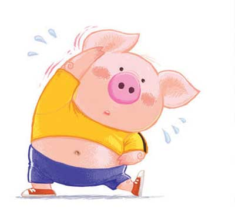

“Doing sports will make you happy.”
—— This sentence is based on scientific theory.

During exercise, the brain secretes an endorphin substance that helps people synthesize serum and dopamine in the body. And dopamine is a chemical that makes people feel happy. In the process of exercise, all our attention is focused on the movement, and the nerves that have been tight will be relaxed. The mood will naturally become better Therefore, exercise is a very good choice when there are some negative emotions in your heart that make it difficult to vent.